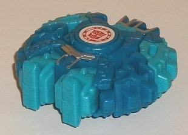
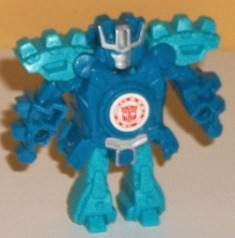
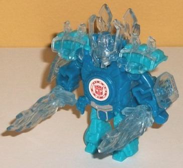
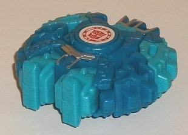
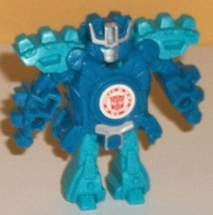
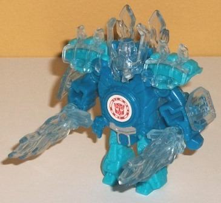
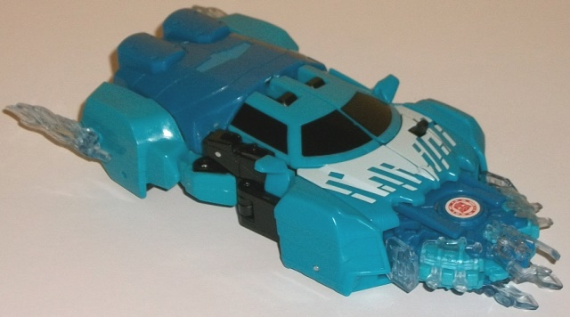
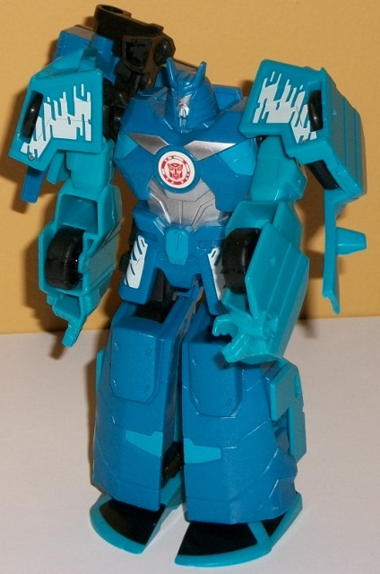

  
Size : Mini-Con
Difficulty of Transformation : Very Easy
Color Scheme : Light arctic glittery blue, moderately dark glittery arctic blue, transparent very pale blue, and some silver
Individual Rating : 4.3
Allegiances : Autobot
(NOTE: Because this set is composed of repaints, this is not a full-blown review. This mainly covers any changes made to the set and the color scheme, and merely compares it to the original versions of these molds. For a review on the original versions of Deployer Drift w/ Jetstorm, go here .)
 Jetstorm
(Blizzard Strike)
Jetstorm
(Blizzard Strike)



Size
: Mini-Con
Difficulty of Transformation
: Very
Easy
Color Scheme
: Light arctic glittery
blue, moderately dark glittery arctic blue, transparent very pale blue,
and some silver
Individual Rating
: 4.3
Well, this certainly
is a 180 compared to the original color scheme, which was more "rock-and-fiery".
This redeco certainly fits "Blizzard Strike", with the two main colors
being a somewhat dark arctic-y blue on the main body, head, and arms, and
a considerably lighter shade of arctic-y, icey blue on his shoulder pads
and legs. I particularly like the darker blue, as it has a bit of glitter
mixed in; not enough to make the plastic look metallic, but just enough
to give it a little "sparkle", just like with ice. The lighter blue has
that glitter in it too, but it's not nearly as apparent. Both main colors
complement and contrast each other at the same time, and generally look
pretty good. If this was a larger toy I'd have liked another main color
besides blue, but as small as the toy is it works. There's a bit of silver
paint on the robot waist, headcrest, and face, which looks decent enough
but doesn't really add much overall. The transparent plastic is a nice
IDEA in that it's supposed to be an icey blue, but the blue is just a bit
TOO pale to the point where it's just barely discernable from regular ol'
clear plastic. As such, the "icey" look isn't quite apparent enough for
me. It certainly doesn't look bad, it just could look better.
No mold changes have
been made to Blizzard Strike Jetstorm.
 Autobot
Drift (Blizzard Strike)
Autobot
Drift (Blizzard Strike)


Size
: Mini-Con Deployer
Difficulty of Transformation
: Medium
Color Scheme
: Light arctic glittery
blue, moderately dark glittery arctic blue, black, and some silver and
white
Individual Rating
: 6.6
Two of Blizzard Strike
Drift's main colors are the same as Jetstorm's-- that is, glittery versions
of a fairly light arctic blue and a fairly dark arctic blue. As before,
they both contrast and complement each other fairly well, though given
how much MORE of them there is on this toy-- given the increased size,
of course-- it doesn't work quite as well. Particularly in vehicle mode,
it's just nearly alllll blue and doesn't look as cool as it otherwise would
have. Black is also used a fair amount on Blizzard Strike Drift, but with
most of the plastic relegated to the robot mode upper legs, part of the
Mini-Con launcher, wheels, and a good number of minor connecting pieces.
This helps to break up the robot mode in particular a bit more and keeps
it from being as one-tone as the vehicle mode. There is some black paint
used for the vehicle mode windows, which definitely helps break up the
colors some near the middle of said mode, but oddly the rear window detail
isn't painted black; it's painted light arctic blue instead, which given
that that's paint too, is... weird. The most obvious and unique paint apps
on this version of Drift are the white paint apps on the front of the vehicle
mode and the shoulders and waist of the robot mode. They're pretty unique,
and look like stylized, rectangular versions of "snow buildup" on certain
areas. It looks pretty good, and honestly I wish was used on the back of
the vehicle mode more to help add some more contrast. Finally, there's
also some silver on the robot chest and face, which looks nice against
the dark blue but isn't really used enough to add much to the color scheme,
just like with Jetstorm.
No mold changes have
been made to Blizzard Strike Drift.
The Mini-Con Deployer
version of Blizzard Strike Drift (and Jetstorm) is a nice idea, and it's
certainly significantly different from the "vanilla" Drift colors, but
it misses the mark a bit. Too much of both toys are either light or dark
arctic blue, with not enough colors added in (particularly in Drift's vehicle
mode) to make things visually interesting, for the most part. (Jetstorm
gets away with it better, being as small as he is.) The nifty stylized
white paint apps are pretty neat, but Drift still needed a bit more (or
needed these paint apps to be more prevalent). Out of the two versions
of this mold I'd recommend the original slightly more, UNLESS you already
have a fair number of "normal" RID2015 Drift toys and want something a
bit different for the Deployer version.
Reviews by Beastbot